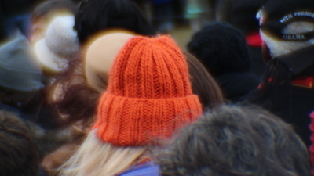
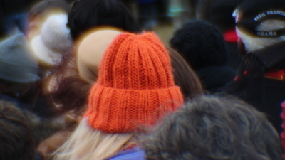

MJ Photography
{kind=link}
{kind=link}
{kind=link}


 

{kind=link}
A little about me
Hi, I'm Megan...I guess you could say I'm just another hobby-collecting millennial with a wandering soul. One of those hobbies is photography.
I have a love-hate relationship with photography. I love it because it's my dream job. I love it because I know it's inside of me waiting to burst forth. It’s that thing I was obsessed with as a 12 year old (that fragile age), and then teenage self-awareness, tribulation, and fear quietly removed it from my set of interests. I love it because it is an escape. I hate it because it is the elephant in the room. I love it because it forces the beautiful details to remain in our memory, rather than fade with time. I hate it because it toys with my emotions. Photography sells me on the notion that I can do it. It’s so “accessible" and “easy,” right? Then, it crushes my confidence with a swift resurgence of self-doubt. I see that the result on the screen does not equal the memory or vision that was in my head - my ego tells me I’ve failed.
This website was hard for me to create. I consider myself an artist. But, you know how that goes...one day I feel like a visionary, and the next day I feel like I should just rollover and go back to sleep. I want this website to be my unadulterated proclamation to the world that I have love and hate wrapped up inside of me like every other human on earth. This is my space to be vulnerable and grow.